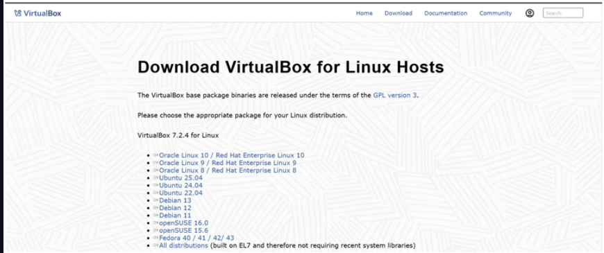
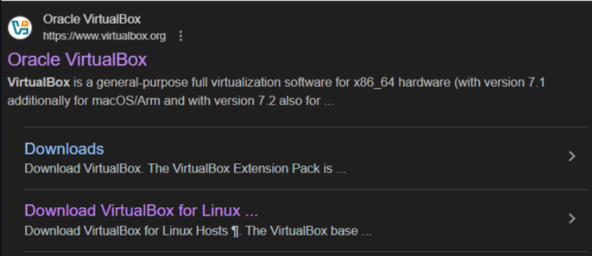
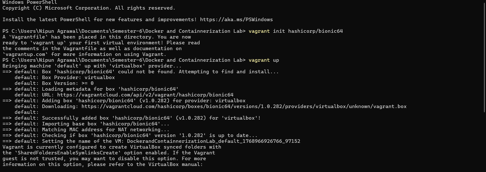
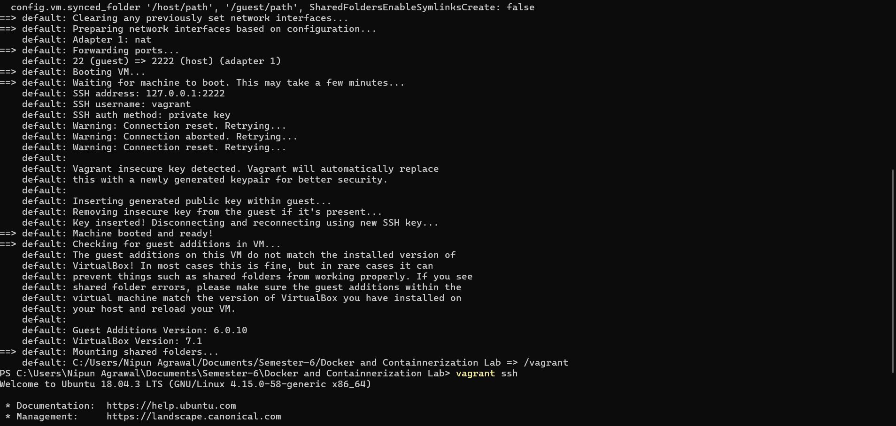

Experiment 1
Introduction to Docker and Containerization
Name: Nipun Agrawal
Roll No: R2142230048
SAP ID: 500119472
Course: Containerization and DevOps Lab
Aim
To understand containerization, install Docker, and compare containers with virtual machines.
Objectives
- Understand containerization
- Install Docker
- Run Docker containers
- Compare containers and virtual machines
Theory
Containerization
Containerization packages an application with all its dependencies into a container, ensuring consistent execution across environments.
Docker
Docker is a platform that allows building, running, and managing containers efficiently.
Containers vs Virtual Machines
- Containers share OS kernel
- VMs run full OS
- Containers are faster and lightweight
Screenshots





Procedure
Step 1: Install Docker
Download and install Docker Desktop.
Step 2: Verify WSL
wsl -l -v
Step 3: Set WSL Version
wsl --set-version Ubuntu 2
Step 4: Run Container
docker pull nginx
docker run -d -p 8080:80 nginx
Virtual Machine Setup
vagrant init ubuntu/jammy64
vagrant up
vagrant ssh
Install Nginx
sudo apt update
sudo apt install -y nginx
Comparison
- Containers → Fast & lightweight
- VMs → Strong isolation
Result
Docker containers were successfully created and compared with virtual machines.
Conclusion
Containers are efficient, fast, and ideal for modern DevOps workflows.
Viva Questions
- What is containerization?
- Difference between VM and container?
- Why Docker is lightweight?